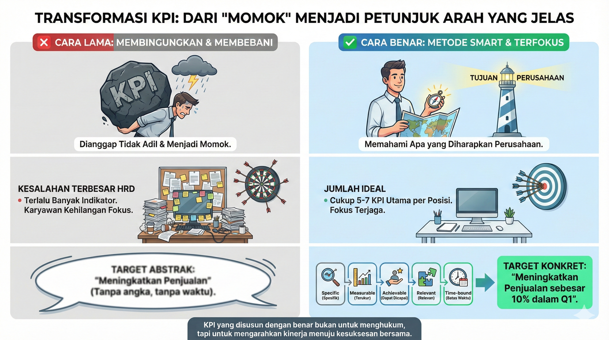

Panduan Menyusun KPI yang Fair dan Terukur

KPI (Key Performance Indicator) seringkali menjadi momok bagi karyawan karena dianggap tidak adil. Padahal, jika disusun dengan benar, KPI justru membantu karyawan memahami apa yang diharapkan perusahaan dari mereka.
Kesalahan terbesar HRD saat menyusun KPI adalah terlalu banyak indikator. Idealnya, satu posisi cukup memiliki 5-7 KPI utama. Jika lebih dari itu, karyawan akan kehilangan fokus.
Gunakan metode SMART (Specific, Measurable, Achievable, Relevant, Time-bound). Jangan membuat target "Meningkatkan Penjualan", tapi buatlah "Meningkatkan Penjualan sebesar 10% dalam Q1".
Ditulis oleh: Ari Ramadhan